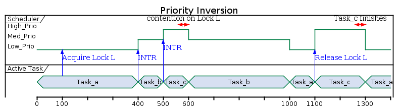
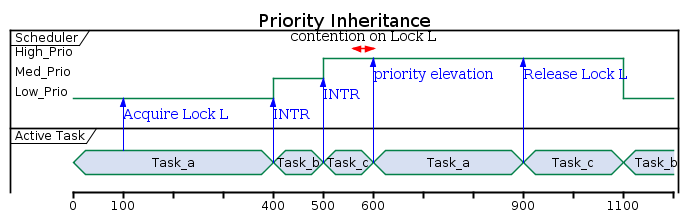

This post will describe the differences between a semaphore and a mutex and some of the pitfalls you may encounter if you do not take these into consideration. Both semaphores and mutexes are concepts that come into play with threading and sharing resources between threads. Conceptually a mutex is for ownership and a semaphore is for synchronization.
Many a coursebook consider a mutex to be a binary semaphore. however this is a gross oversimplification that will have detrimental effects on real-time/interrupt behavior. It is therefore false to assume a mutex is merely a binary semaphore.
In order to explain the key difference between a mutex and a semaphore, one must understand the concept of priority inversion and priority inheritance.
Priority inversion
Given tasks a,b and c with respectively increasing priority in a real time operating system. Say task a, lowest priority, is running and obtains a lock l (i am deliberately not specifying if it's a mutex or semaphore) to manipulate data x . While it has the lock, it gets interrupted/preempted by task b. Task b on its turn gets interrupted by task c. Task c requires access to data x and needs to obtain lock l. However it is unable to do so as task A has not yet relinquished the resources. This is also referred to as resource contention.
As task c is simply waiting for the lock, the scheduler will suspend task c and allow task b to finish running. Once b is finished, the scheduler will schedule task a. Only when the lock is released by task a, can task c continue. This means that task b erroneously has a higher priority than task c.

Priority inheritance
To solve the problem of priority inversion, one needs priority inhertance. Priority inheritance will make sure that if there is resource contention between 2 tasks of different priority, the lower priority task will get promoted to higher priority task. In the example described above, this means that task a would get the same priority as task c. In other words, task a would be allowed to finish before task b. Consequently, task c would be allowed to finished before task b.

Semaphore vs mutex (continued)
A semaphore allows sharing resources between multiple threads. For example: a system has 5 serial interfaces which can be distributed between threads. The sempahore would be initialized with value 5 and if a thread requires acess it will 'wait' for it. If the semaphore is above 0, the wait will return immediately and decrement the sempahore. If the sempahore is 0, the wait will block until another thread posts/releases/increments the semaphore.
A mutex is used for ownership. While you have the mutex, meaning you have locked it, you can manipulate the shared data. When you are done, you release the lock and another thread can lock the mutex and access the shared data. The actions performed while you have the lock, is also called the critical section. Note that there is a binary behavior: You have the lock or you don't. Whereas with a sempahore more than 1 thread can access the resource at the same time, with a mutex this is impossible.
Now the step to call a mutex a binary semaphore might seem logical. After all, it is just sharing a resource with binary behavior:
- Semaphore = 1: it can be locked
- Semaphore = 0: it is locked
However this is where the big difference comes into play. The task that has the lock, is transparent to the scheduler. This is vital information to allow for priority inheritance. If you would not have this information, how do you know which task to elevate? If you would use a semaphore, this is exactly the information that is missing. With a semaphore any thread can wait or post to the semaphore. There is no context of which task was responsible. Consequently there is no option to perform priority inheritance.
To recap:
- Priority inheritance is impossible with semaphores.
- Priority inheritance is impossible with binary semaphores
- Priority inheritance is possible with mutex
Mutexes are not binary sempahores.
Semaphores in C++11
Sadly, in the standard library, there is no semaphore available. While you can wrap the POSIX interface in a class, this is anything but elegant. What the standard library does offer however, is a condition_variable. This should provide the same functionality.
Do note the subtle difference between wait_until and wait_for. wait_until uses an absolute time-point, measured since the epoch. wait_for uses a relative time interval. At first glance, this seems to be just a minor difference. However this has some important consequences. As you can always experience spurious wake ups, it is up to the caller to check if it was spurious or not. If it was spurious, the caller should call the wait function once more. If You use the wait_for function, every spurious wake up can delay your wait considerably.
If you use wait_until, even if you call it again after a spurious wakeup, the end time is fixed. With wait_for this is undefined. If you use a predicate, this is not relevant, as spurious wake ups are avoided.
For an example, have a look at my github repo here. In this example I use the semaphore to immediately stop a detached thread on object destruction.